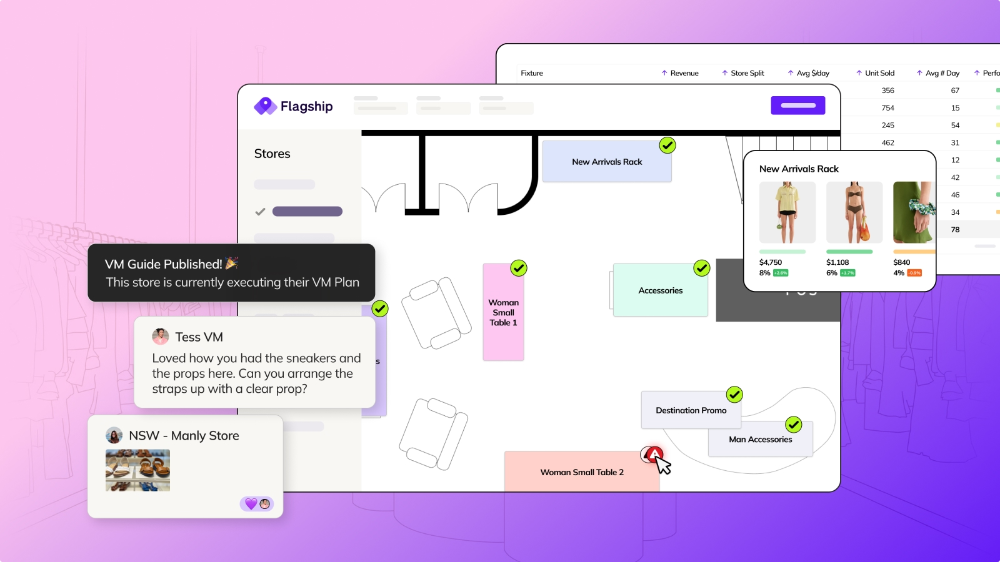
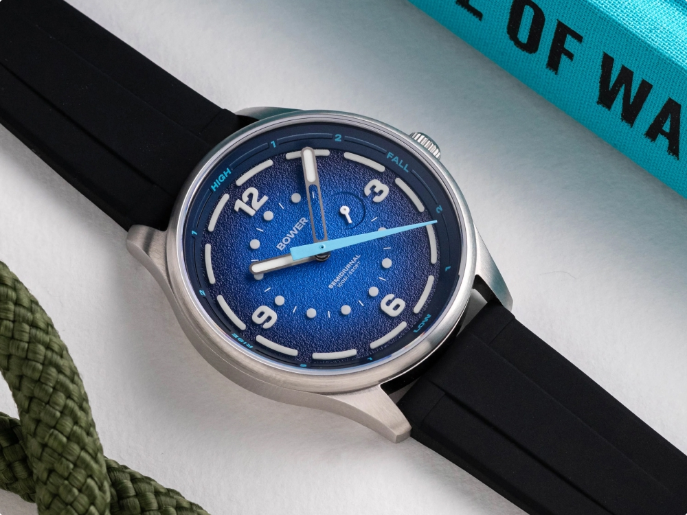
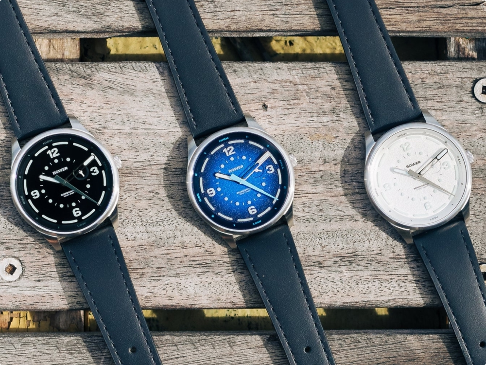
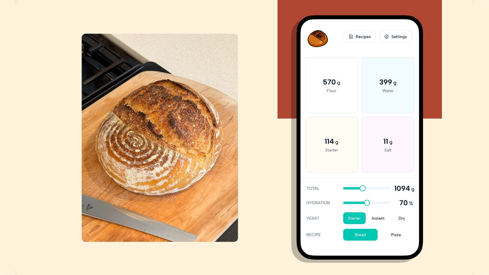
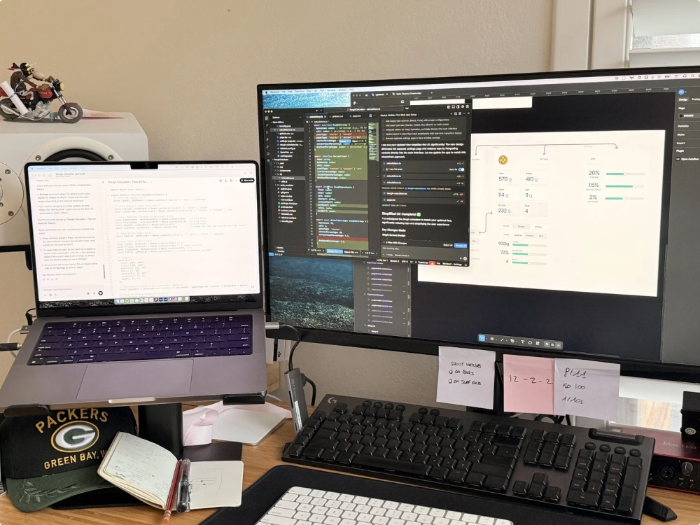
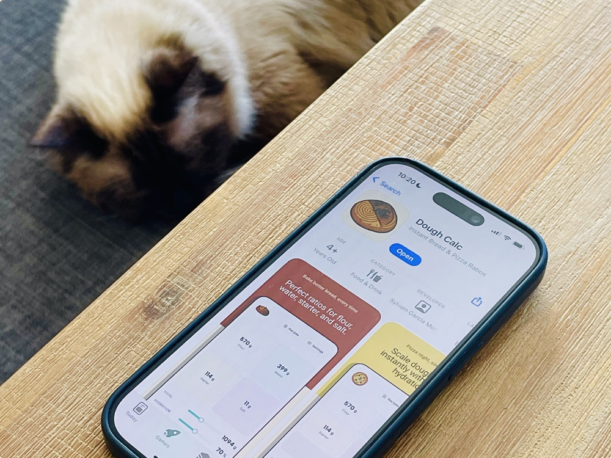
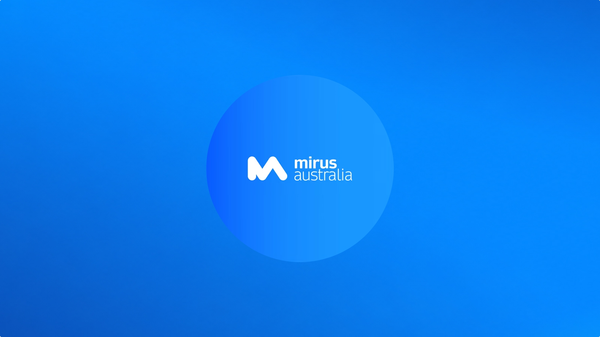
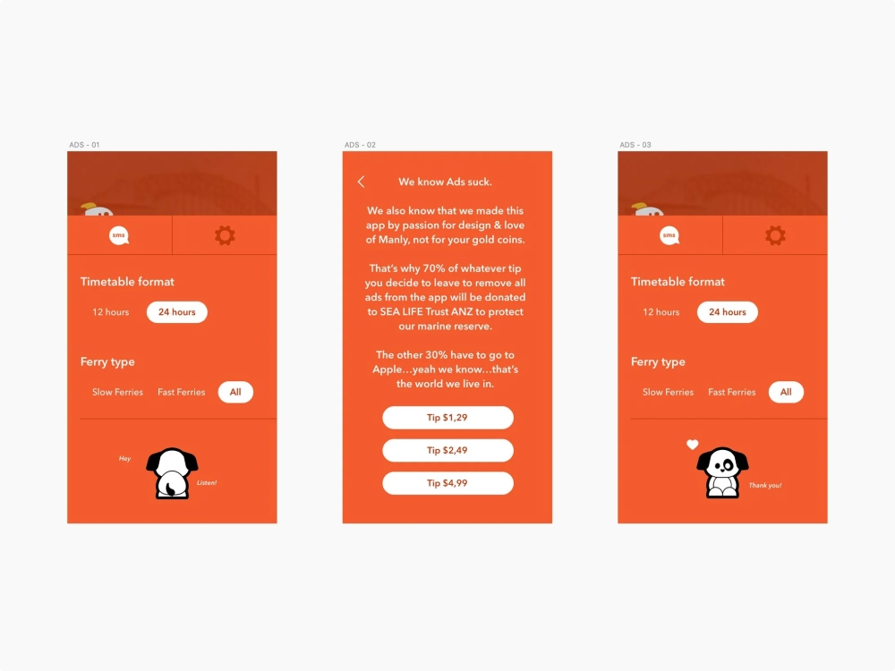
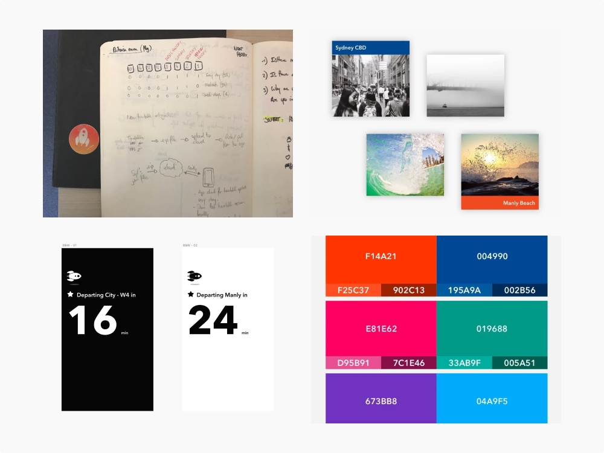
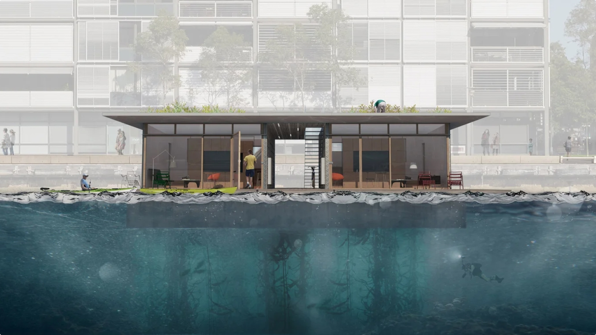

A few projects across finance, retail, health and the ocean. Some paid the bills, some I just wanted to exist.
Sydney ↑↓navigateEnteropenEscback←→prev / nextprops to you for remembering — say hi
Esc to go back
Flagship · Retail intelligence · Current
Flagship AI
How I'm giving physical stores the analytics ecommerce has had for 20 years

The challenge
Retailers still merchandise on instinct, because nobody can see the link between how a store looks and what it sells. A brilliant call and a terrible one look identical for weeks, right up until the sales numbers land.
The role
I'm responsible for every aspect of the platform: research, product direction, the design system, AI-driven experiences, and part of the brand. Starting from scratch, and with almost no competition, gives us a blank canvas to create something genuinely original.
In the era of AI, we're moving faster than ever before. Brands can now merchandise hundreds of stores, no matter the size or inventory, with a single click. We take the work of visual merchandising teams and use AI to tailor it to every store in the network instantly.
The outcome
Flagship raised $6M with the platform at the centre of the pitch, because something investors could understand at a glance did as much persuading as the deck around it. It's live with customers and still changing every week.
If your life happens near the ocean, the tide matters more than the time. Tide watches existed, but they were either expensive or built for someone else, so I decided to make the one I wanted to wear.
During a surf trip to my home country (bonjour!), it stared at me on the wall of a creperie: a tide clock, with a single tide hand going around the dial. Then and there I said to myself, "how hard can it be to put that hand on top of an hour and minute hand, in a watch?"
The role
Bower is personal: the watches, the brand, the visual identity, the Shopify store, the photography, the videography, the socials, the writing, the packing and shipping, the customer emails. It's a creative playground for me. There's no team to hide behind, which is the fastest design education I've ever had.
The outcome
The Tide Seeker became the first tide watch designed in Australia, sold out across several runs, and got picked up by Time+Tide, The Subdial and Man of Many. The brand is growing organically, and many more models are coming to life as it scales.
1stTide watch designed in Australia
WorldwideCustomer base
Sold outAcross multiple colourways


Curious how a designer ends up running a watch brand?Get in touch
How I launched Australia's first tap-to-pay for BNPL
The challenge
Zip was growing fast, but spending your balance meant a barcode that most shops couldn't accept. Customers kept asking for the same thing, over and over: just let me tap.
The role
I took it from a five-day design sprint to a shipped card in Apple Wallet and Google Wallet, running the research, designing the in-store flows, and steering Apple, Google and Visa in the same direction.
The hardest calls were about behaviour, not pixels. We tested asking people to raise their repayments before getting the card, watched adoption fall within thirty minutes of going live, and killed the step.
The outcome
Zip Pay users can now tap anywhere contactless is accepted, which turned a barcode nobody wanted into one of the company's biggest growth levers. At the time, BNPL was accepted in about 13% of Australian stores. After this, it was everywhere Visa was.
How I designed, built and shipped an iOS app alone

The challenge
Every sourdough or pizza bake started with maths: hydration, starter, ratios, then scaling the lot for pizza balls. After a few years of doing it in a notebook, I got tired of asking why this wasn't just an app.
The role
I built it around sliders instead of form fields, because mid-bake with flour on your hands you don't want to type, you want to nudge. The controls sit at the bottom so your hand never covers the numbers, and I took it from prototype to a native iOS app with GPT, Claude and Windsurf doing the parts I couldn't.
The outcome
Dough Calc is on the App Store, and the real result isn't the app. It's proof that a product designer can now own the whole line, design to build to ship, without waiting in the queue for engineering.
LiveOn the App Store
SoloDesign, build and ship
AIBuilt with GPT, Claude and Windsurf


Want to talk about designers who build?Get in touch
Mirus Works · Aged care SaaS
Mirus Works
How I made aged care rostering readable

The challenge
An aged care facility runs on hundreds of staff, tangled award rules and hard compliance rules. Managers often couldn't answer the simplest question of all: who is qualified, available and actually here right now?
The role
A fourteen-week brief turned into two years, and my role grew from UI design into end-to-end product design along the way. The roster screen was the crux, a spreadsheet with something in every cell, so we set rules about what each cell was allowed to say and dimmed anything that wasn't the manager's problem.
Then we built the design system that went on to shape the company's other products.
The outcome
Managers got one to three hours back every day, which in aged care means time spent on people instead of paperwork. The platform launched, kept selling, and the design system outlived the project.
Every Manly commute started with me squinting at a timetable I'd already read a hundred times. I wrote "zero interaction app" at the top of a page and made that the whole brief.
The role
I built it after hours with a developer I met through a work side project, and gave the app everything it needed to work it out alone: the time, the day, your location, the wharf you're standing closest to.
The hard part was restraint, because getting to almost nothing on screen took far more iterations than a busy version would have.
The outcome
Open Next Ferry and your next departure is already there, no taps, no menus. It has quietly served a few thousand Sydney commuters for years on close to zero marketing.
0Taps to see your next ferry
1000sDownloads, mostly word of mouth
10 YearsLive on the App Store


Ask me about the timetable I still update by handGet in touch
Bee Breeders · Architecture competition · 2018
Bee Breeders, Harbour Life
How a floating home concept won its category

The challenge
Sydney housing is brutal if you're young or starting without help, and I wanted to know whether product thinking could do anything useful about it. So I called an architect friend and entered a competition in a field that isn't mine. (If you read my more recent project about watches, same principle: how hard can it be?)
The role
I led the research, digging through income, housing cost and density data until the answer stopped being a mood board and started being a place, then landed on self-sufficient floating homes for Sydney Harbour.
Every other entry I studied was a wall of text, so I let the images carry it and kept the words out of the way.
The outcome
Harbour Life won its category, placed in the top four overall, and ended up published in the first architecture book published by Bee Breeders. Turns out clear storytelling travels, even into someone else's discipline.
I'm Syl, a product designer and design lead in Sydney with about fifteen years across finance, health and retail, from early-stage startups to ASX-listed companies.
Right now I'm deep in the artificial intelligence way of doing things. It's changing how we design and ship products at a speed no one was really prepared for.
The short version of a decade: the people I've shipped with, in their own words.
"His use of data is standout within the design team. He uses metrics to showcase outcomes, iterate designs and advocate for change."
MathildaDesign Lead at Zip
"Syl kept things simple in checkout and stress-tested the edge states, not just the happy path. That's good influencing and good UX design."
MelDesign Director at Zip
"When a PM gets too hung up on the solution, he brings it back to the user's problem. On multiple occasions he managed to bring the room to the right place."
RenataSenior Manager, UX Research at Zip
"He can take any requirement, commercial or customer, and turn it into a stunning high-fidelity mockup or prototype. Such a joy to work with."
Whether you've got a product to take from zero to one, long for a design chat, or you want the long version of one of these projects, I'd like to hear from you.